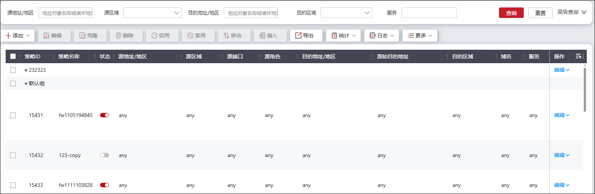
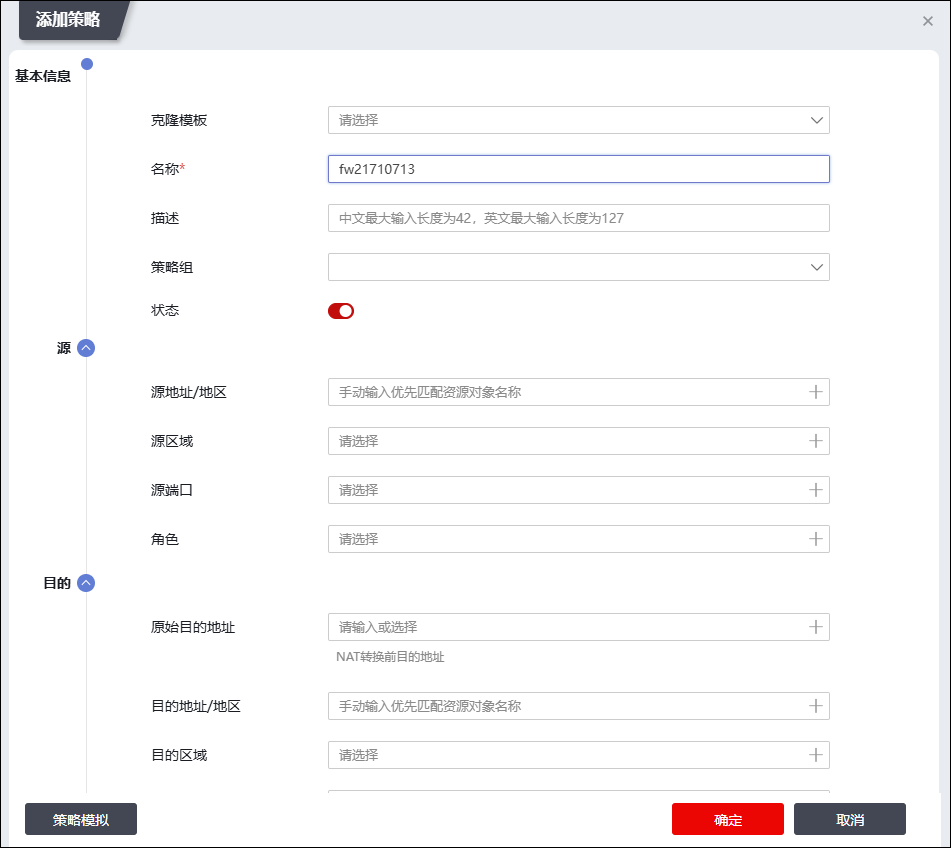
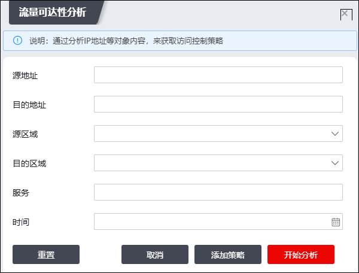
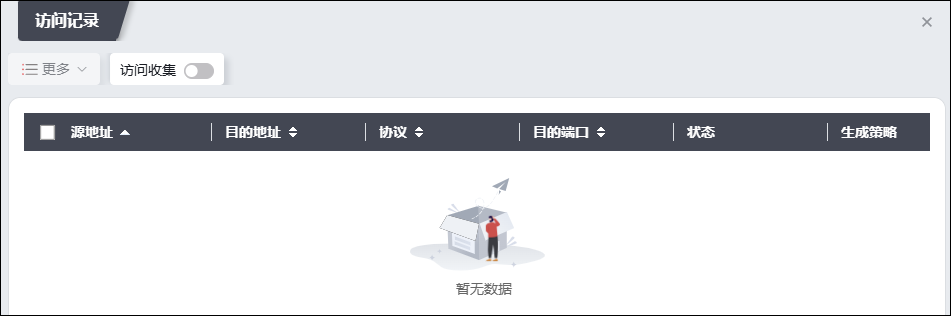

配置访问控制策略的具体操作如下：
在配置访问控制策略之前，需要先进行如下两个步骤：
l配置对象属性（可选）。关于对象属性的配置具体请参见 资源管理。
l配置安全引擎策略（可选）。关于安全引擎相关策略的配置具体请参见 安全配置文件 。
| 步骤1 | 选择 ，进入访问控制界面，如下图所示。 |

界面显示已添加访问控制策略和策略组的基本内容，如策略ID，策略参数（地址、区域、以及引用的安全引擎）等；点击界面右上角的“”，可展开自定义字段窗口，配置策略列表展示的关键字字段。
| 步骤2 | 添加访问控制策略。 |
1）点击“添加”右侧的下拉框，选择“添加策略”，弹出“添加策略”窗口，如下图所示。

在设置访问控制规则时，各项参数的具体说明如下表所示。
参数 |
说明 |
|
|---|---|---|
基本信息 |
克隆模板 |
选择要克隆的模板。已添加的访问控制策略可作为克隆模板，方便管理员快捷操作。 |
名称 |
必填项，设置访问控制规则的名称。 |
|
描述 |
设置对该访问控制规则的必要描述信息。 |
|
策略组 |
设置该条策略从属的策略组。NGFW内置了默认策略组，管理员也可以根据管理需求新建策略组。 |
|
状态 |
切换开关状态以设置是否启动该访问控制规则。 |
|
源 |
设定发起连接的源应当匹配的条件，从而实现基于条件对报文进行访问控制。如果不指定，表示任何源信息均匹配该规则。可设定的选项包括： 1）源地址/地区：配置地址资源对象，从而限定报文的源IP地址。另外，此处还可选择地区对象限定IP的归属地或定义MAC地址对象对源MAC地址过滤。 2）源区域：选择区域资源限定报文的来源区域。 3）源端口：通过端口号配置服务资源。 4）角色：选择角色对象。 说明： 1）多个选项设定的条件之间是“与”的关系，即数据包的源信息在匹配规则的时候必须都要匹配上选择的选项，规则才能生效； 2）每一选项均可选择多个对象，多个对象之间是“或”的关系，即只要满足其中一个对象即可； 3）当没有设置地址对象时，默认表示任意地址； 4）角色是用户的集合，管理员可以根据用户间的联系将若干用户分为一个用户组，并与角色关联。 |
|
目的 |
设定连接目的应当匹配的条件，从而实现基于条件对报文进行访问控制。当设定多项时，必须同时满足各个条件才匹配该规则；如果不指定，表示任何目的信息均匹配该规则。可设定的选项包括： 1）原始目的地址：配置地址资源对象，从而对NAT转换之前的目的地址进行访问控制规则匹配。为了防止原始目的地址在进行DNAT后无法被检测识别，在对数据包的原始目的地址进行访问控制时需要设置该项。 2）目的地址/地区：配置地址资源对象，限定报文的目的IP地址，可选择地区对象限定IP的归属地。 3）目的区域：选择区域资源限定报文的目的区域。 4）域名：选择已定义的域名，限定报文访问的域名名称。 说明： 1）多个选项设定的条件之间是“与”的关系，即数据包的目的信息在匹配规则的时候必须都要匹配上选择的选项，规则才能生效； 2）每一选项均可选择多个对象，即多个对象之间是“或”的关系，只要满足其中一个对象即可； 3）当没有设置地址对象时，默认表示任意地址。 |
|
其他 |
服务 |
选择服务对象，从而对数据报文的协议和目的端口号进行限定。关于服务的介绍和设置具体请参见 服务。 如果此处没有配置任何服务，则系统默认为不对协议和端口号进行限定。 |
时间 |
设置该访问控制规则生效的时间段。如果没有选择时间段对象则表示所有时间。 |
|
应用组 |
设置匹配该访问控制规则的应用组。关于应用的介绍和设置具体请参见 应用。 说明： 如果应用程序具有多项功能，则此处可以选择整个应用程序或个别功能。如果选择整个应用程序，则所有功能均将包含，而且在将来该应用程序添加功能后会自动更新应用程序定义。应用组只勾选应用类型时，访问控制策略引用后，此策略对应用不生效；应用组必须勾选具体应用或协议时被访问控制引用方可生效。 |
|
动作 |
动作 |
设置对于匹配规则的数据报文采取的操作。可选项：放行、阻断、认证，收集。 当选择“放行”时，表示放行匹配规则的数据报文。 当选择“阻断”时，表示阻断匹配规则的数据报文。 当选择“认证”时，表示对符合条件的数据报文进行额外的Web认证。 当选择“收集”时，表示对符合匹配规则的数据报文进行收集。 |
门户 |
当“动作”为认证时，该参数为必选项。配置用户Web认证的门户地址。 |
|
安全引擎 |
选择或勾选不同的安全引擎即可与访问控制策略关联。关于各类安全引擎的配置具体请参见 安全配置文件 |
|
高级信息 |
统计 |
设置是否开启该策略统计开关，选择“”则可以显示该策略的匹配情况。 |
最大活动会话数 |
“统计”开关开启后，该参数可配置。设置限制当前设备上命中该条访问控制规则的连接数量。取值范围：0-最大值（最大值为NGFW设备支持的最大并发连接数，该参数最大值受license控制）。 |
|
长连接 |
设置是否开启该长连接开关，默认为关闭。选择“”需要配置长连接时长阈值，取值范围：1-2160小时，默认为48小时。 说明： 一般来说，NGFW对通信空闲一定时间的连接将自动断开，从而提高安全性和释放通信资源。但是，某些应用所建立的连接需要长时期保持，例如ATM机器必须和处理中心的服务器一直保持着连接，那么此时就必须将此类连接设置为长连接，从而保证相应的服务正常进行。 |
|
策略日志 |
设置当数据报文匹配该访问控制规则后，是否记录日志。选择“”后开启访问控制的策略日志记录开关。 |
|
连接日志 |
设置是否记录连接日志。选择“”后开启记录连接日志开关。 |
|
IPv6逐跳扩展头 |
逐跳扩展头位于IPv6头之后，包含数据包到达目的地过程中经过的每个节点的检查项。 开启该项开关后，该条访问控制规则只匹配包含IPv6逐跳扩展头的数据报文。提高NGFW对数据包的处理能力。 |
|
IPv6目的地扩展头 |
目的地扩展头包含只能由最终目的地节点所处理的选项。目前，NGFW只定义了填充选项，将报文头填充为64位边界。 开启该项开关后，该条访问控制策略只匹配包含IPv6目的地扩展头的数据报文。 |
|
IPv6路由扩展头 |
路由扩展头指明了数据包在到达目的地过程中将经过的特殊的节点，包含了各节点的地址列表。 开启该项开关后，该条访问控制规则只匹配包含IPv6路由扩展头的数据报文。 |
|
|
²数据包的源信息和目的信息在匹配访问控制规则时必须匹配上选择的所有选项，规则才能生效。 ²管理员可配置访问控制策略数量受license控制。 |

2）点击【确定】按钮完成该条访问控制规则的添加。
| 步骤3 | 在界面上方的文本框中输入资源对象参数和源/目的IP地址等（点击“”可展开完整查询界面），再点击【查询】按钮，匹配的访问控制策略信息显示在弹窗中。 |
| 步骤4 | 选择访问控制规则，点击“”，可进行策略内容的修改。 |
| 步骤5 | 选择访问控制规则，点击“”，弹出“移动策略”窗口，设置将当前规则移动到已存在规则之前或之后。 |
| 步骤6 | 启动/禁用访问控制策略。 |
在已有访问控制策略的“状态”列中，点击图标，弹出确定启用/禁用当前策略的提示对话框，点击【确定】修改策略的启用状态。
| 步骤7 | 选中策略表中的策略，点击“插入”，可在当前位置插入一条访问控制策略。 |
| 步骤8 | 点击“日志开关”可以开启所有规则的日志开关。 |
| 步骤9 | 点击“更多”“流量可达性分析”，可以在弹出窗口中通过配置待分析参数控制界面显示对应参数内容的访问策略，弹出窗口界面如下图所示。 |

配置参数后点击【开始分析】，系统会对参数进行智能分析，符合分析结果的参数展示在策略列表中；管理员也可以在配置完成参数后直接点击【添加策略】，会跳转至策略添加界面。
| 步骤10 | 点击“更多”“访问记录”，可在弹出界面中控制是否开启访问记录开关以及查看访问记录，界面如下图所示。 |
